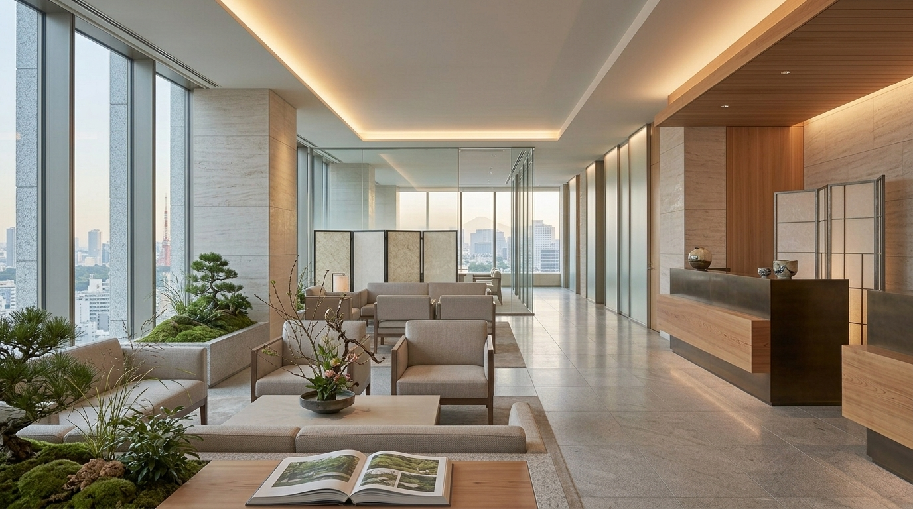

受け入れ前後の負担軽減
言語面や来日前後の調整、必要書類や連絡事項の整理をあらかじめ進めることで、医療機関様の事務負担を抑え、受け入れ時に本来業務へ集中しやすい環境づくりを支援します。
For Medical Partners
ZENDIAは、海外から
本ページでは、
ZENDIAは、
株式会社ゼンディアは
ZENDIAとの連携に
言語面や来日前後の調整、必要書類や連絡事項の整理をあらかじめ進めることで、医療機関様の事務負担を抑え、受け入れ時に本来業務へ集中しやすい環境づくりを支援します。
受診前後の情報整理や関係者間の連絡調整を通じて、説明不足や認識齟齬、受け入れ時の混乱を抑え、外国人受診者対応に伴う運用上のリスク低減を支援します。
単発対応で終わらせず、継続的な連携と運用の安定化を見据えることで、医療機関様にとって無理のない受け入れ体制づくりと、持続的な受診機会の創出につなげます。

ZENDIAが主に
経営者層やご家族での
ZENDIAは
受診者様の希望や状況を整理し、必要事項を事前に確認します。受診前のご案内を通じて、内容を理解したうえで来日・受診できるよう支援します。
受診日程、必要事項、対応範囲などについて、医療機関様と確認・調整します。ご方針や運用に沿いながら、受け入れが円滑に進むよう整えます。
来日の準備を支援するとともに、移動・宿泊等については、必要に応じて国内外の旅行会社と連携し、関係者間の調整を行います。受診者様が安心して受診に向かえるよう、来日前後の実務を支援します。
受診前に、提出書類の確認や当日の流れ、飲食制限などの注意事項を、必要に応じて受診者様へご説明します。当日は受診者に同伴し言語支援を通じて、不安や負担の軽減と円滑な受診につなげます。
受診後に必要な情報の整理やご案内を行い、必要に応じた実務支援につなげます。翻訳した報告書の送付を含め、受診後の確認と理解を支援します。
医療機関・
メールでの直接連絡 contact@zendia.jp